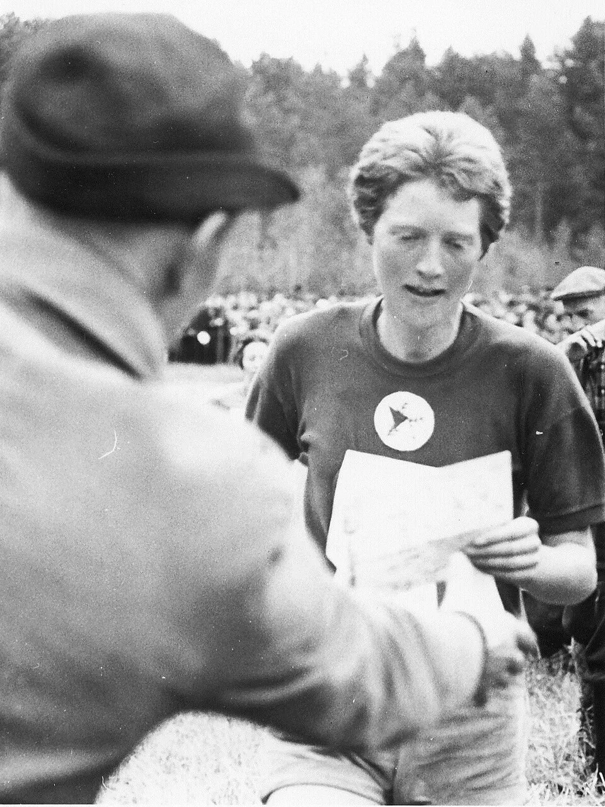
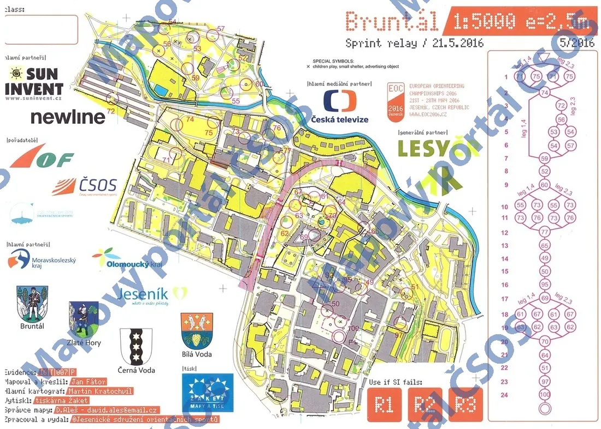
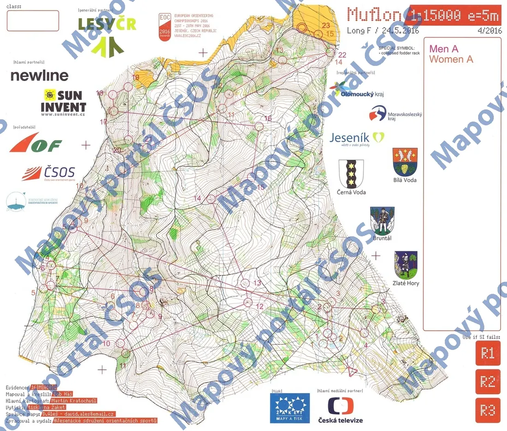
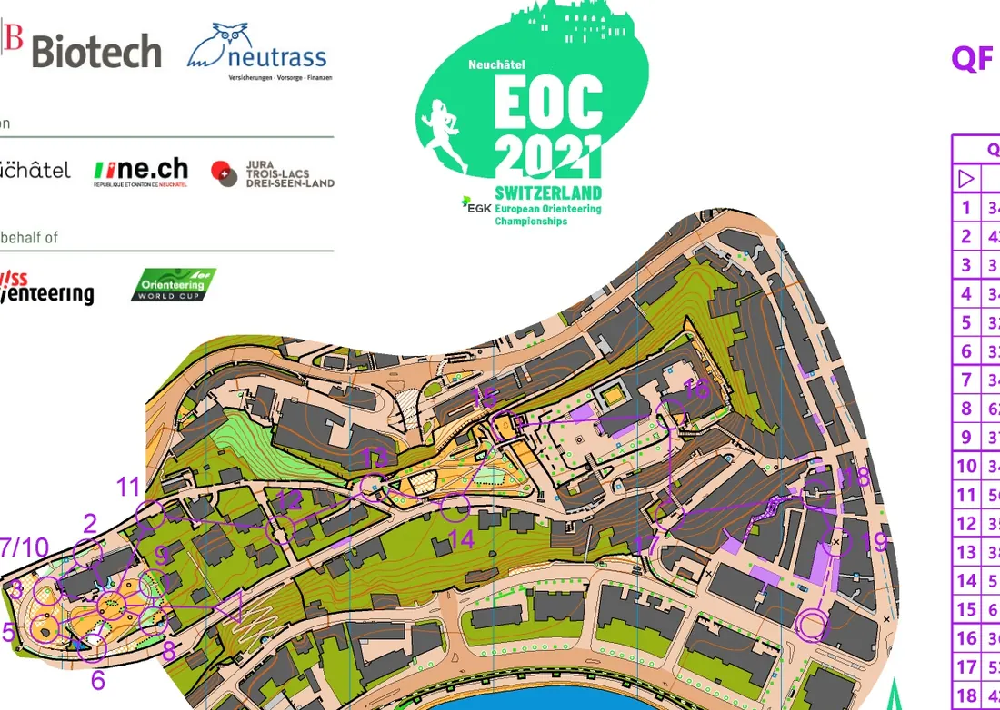
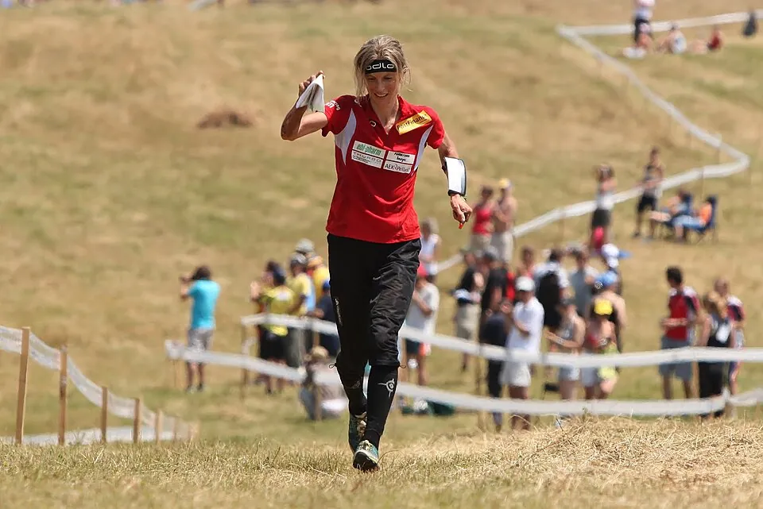
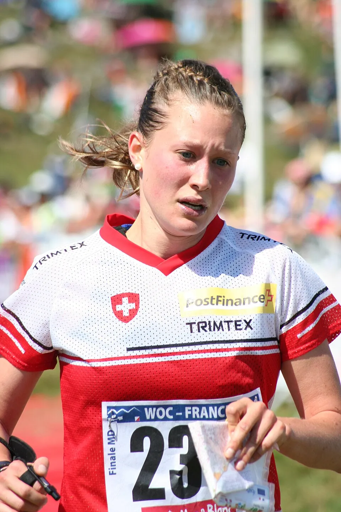
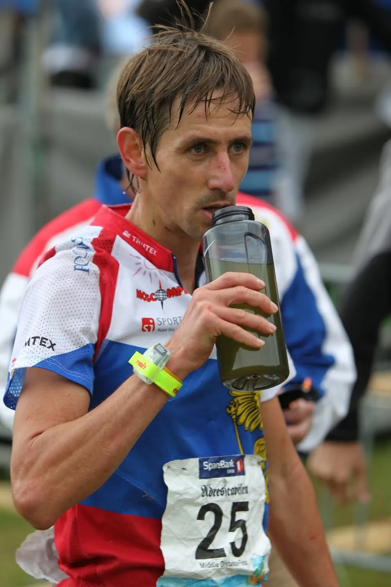
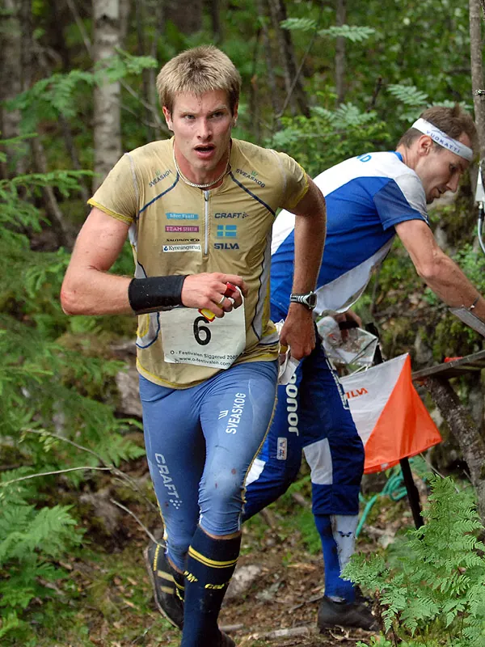
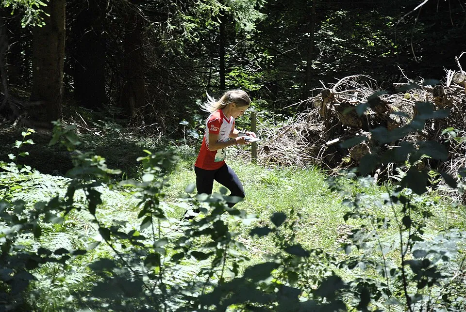

Самый старый официальный старт IOF
Чемпионат Европы старше чемпионата мира: именно с него в 1962 году начались официальные соревнования Международной федерации ориентирования (IOF). После двух первых турниров континентальное первенство на 36 лет уступило место WOC и вернулось только в 2000 году — уже как полноценный старт элиты с несколькими дистанциями.
Сегодня EOC — один из этапов Кубка мира и такой же «двойной» чемпионат, как и мировой: с 2020-х годов он проводится ежегодно, чередуя спринтерскую и лесную программы.
- Первый чемпионат
- 1962, Лётен (Норвегия)
- Перерыв
- с 1966 по 1998 год не проводился
- Периодичность
- раз в два года в 2000–2018; ежегодно с 2021, спринт и лес по очереди
- Дисциплины
- лонг, миддл, эстафета; спринт, нокаут-спринт, спринт-эстафета
1962 и 1964: прототип чемпионата мира

Первый чемпионат Европы прошёл 22–23 сентября 1962 года в норвежском Лётене, всего через год после основания IOF. Разыграли один официальный комплект медалей — индивидуальную гонку; эстафета была неофициальной. Победили норвежец Магне Люстад и шведка Улла Линдквист, которая через четыре года станет и первой чемпионкой мира. Женская трасса была длиной 7,5 км и включала всего семь контрольных пунктов.
Через два года в швейцарском Ле-Брассю эстафета стала официальной. Обе мужские эстафеты, 1962 и 1964 годов, выиграли финны, а в личном зачёте 1964 года победили финн Эркки Кохвакка и швейцарка Маргрит Томмен. Формат «индивидуальная гонка + эстафета» перешёл к чемпионату мира, и с 1966 года европейское первенство надолго исчезло из календаря.
2000–2018: возвращение

Возрождённый чемпионат 2000 года в украинском Трускавце стал триумфом Валентина Новикова: он выиграл и классическую, и короткую дистанции. В 2002 году в венгерском Шюмеге миддл выиграл Михаил Мамлеев (позже он выступал за Италию и взял для неё бронзу чемпионата мира), а Симоне Нигли-Лудер завоевала первый из пяти своих европейских титулов на длинной дистанции. С того же года начинается серия шведа Эмиля Вингстедта — четыре спринтерских золота подряд, в 2002–2008 годах.
Француз Тьерри Жоржу трижды подряд выигрывал миддл (2004, 2006, 2008), а чемпионат 2008 года в латвийском Вентспилсе получился для сборной России лучшим: Дмитрий Цветков выиграл длинную дистанцию, а мужская эстафета Цветков — Храмов — Новиков стала чемпионской. В 2010 году в Болгарии Новиков снова стал чемпионом Европы, теперь на миддле, а в 2012 году в шведском Фалуне эстафету выиграли российские девушки: Наталья Ефимова, Светлана Миронова и Татьяна Рябкина.
Чемпионат 2014 года в Португалии прошёл в апреле — непривычно рано для сезона. В 2016 году в чешском Есенике впервые разыграли спринт-эстафету, и первыми чемпионами в ней стали россияне.

С 2021 года: ежегодно и по очереди

Лесной чемпионат 2020 года в эстонском Раквере отменили из-за пандемии. Вместо него в мае 2021 года в швейцарском Невшателе провели спринтерский EOC, и там впервые на чемпионате Европы разыграли нокаут-спринт. Его первыми победителями стали Маттиас Кибурц и Туве Александерссон; через год этот формат появился и на чемпионате мира.
Раквере дождался своего чемпионата в 2022 году, после чего EOC стал ежегодным: спринтерский — в Италии (2023), лесной — в венгерском Море (2024), спринтерский — в бельгийском Хасселте (2025). Чемпионат 2026 года в литовском Друскининкае завершил сезон: Каспер Харлем Фоссер выиграл лонг и миддл, а Туве Александерссон — длинную дистанцию и эстафету.

Герои чемпионатов Европы




Симоне Нигли-Лудер — пятикратная чемпионка Европы на длинной дистанции (2002, 2004, 2006, 2010, 2012). Туве Александерссон четырежды выигрывала лонг и дважды нокаут-спринт, а Юдит Вюдер собрала три личных титула в 2014–2016 годах и две победы в эстафете. Валентин Новиков стал первым героем возрождённого чемпионата: в 2000 году он выиграл обе личные дистанции. У мужчин Даниэль Хубманн трижды был чемпионом на длинной дистанции, а в 2026 году в 43 года выиграл эстафету в составе сборной Швейцарии. Эмиль Вингстедт остаётся единственным, кто выигрывал спринт на четырёх чемпионатах подряд.
Российские медали


Помимо побед, российские спортсмены регулярно поднимались на пьедестал: Андрей Храмов — серебро спринта 2004 года и две бронзы (2006, 2008); Татьяна Рябкина — бронза миддла и лонга в 2004 году, серебро на длинной дистанции в 2008 и 2012 годах; Светлана Миронова — серебро лонга 2014 года; Наталья Гемперле — серебро лонга и бронза спринта 2018 года. Женская эстафета, помимо золота 2012 года, взяла серебро в 2008 году и бронзу в 2004, 2014 и 2016 годах.
Смотреть
Источники
Даты, места и составы — Календарь O-Maps; статьи Википедии European Orienteering Championships, Чемпионат Европы по спортивному ориентированию. Фрагменты карт — Mapový portál ČSOS, IOF Eventor, World of O; фотографии — Wikimedia Commons (авторы и лицензии указаны в подписях).Все старты серии с протоколами, картами, GPS-трансляциями и видео: в календаре и на странице чемпионата.